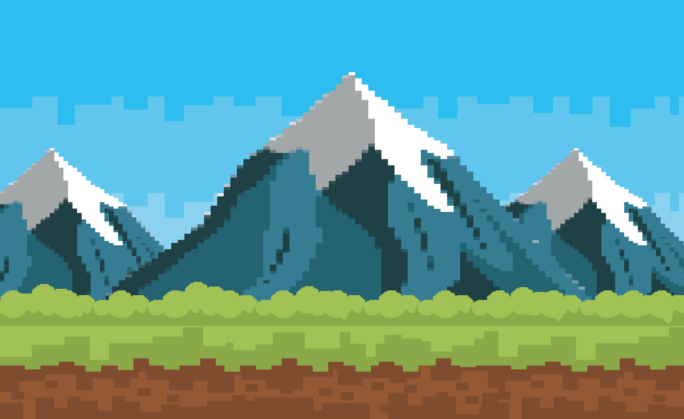

Exploring the World of Minecraft
October 3, 2026 by Ruth-Ann Allen

Minecraft is a creative game that allows players to explore different environments, collect resources, and build structures. One of the most interesting things about the game is the freedom players have to create their own worlds.
Players can explore forests, mountains, caves, oceans, and villages while gathering materials for their adventures. Minecraft also encourages creativity because almost anything can be built using the blocks available in the game.